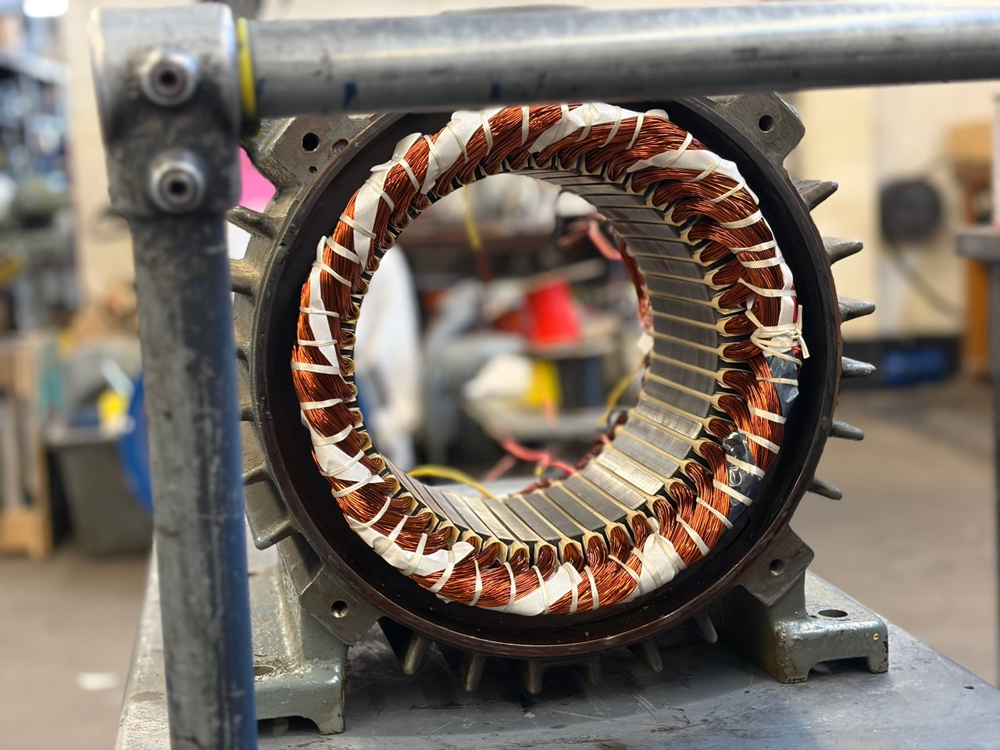
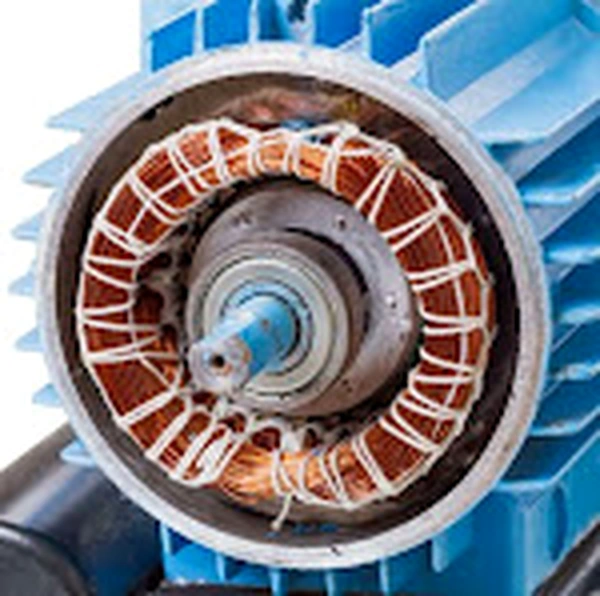
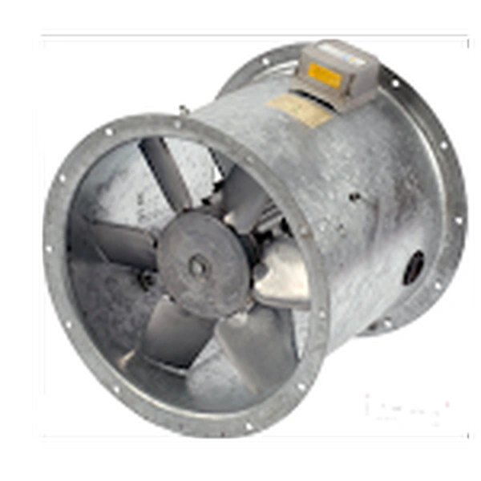
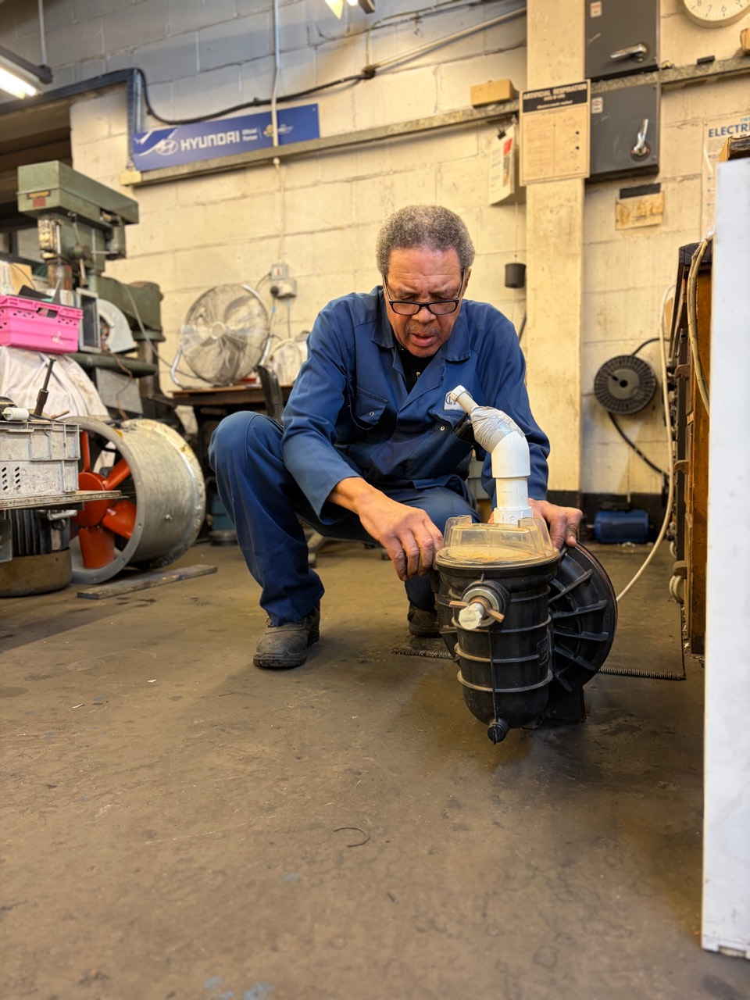
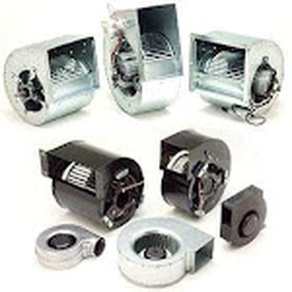
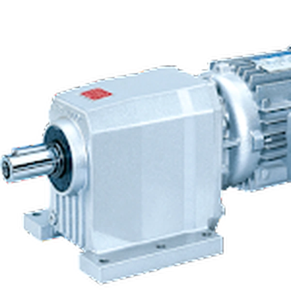
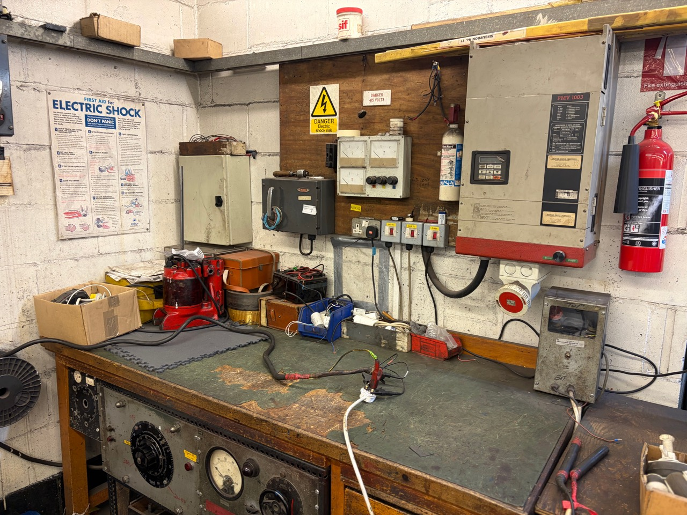
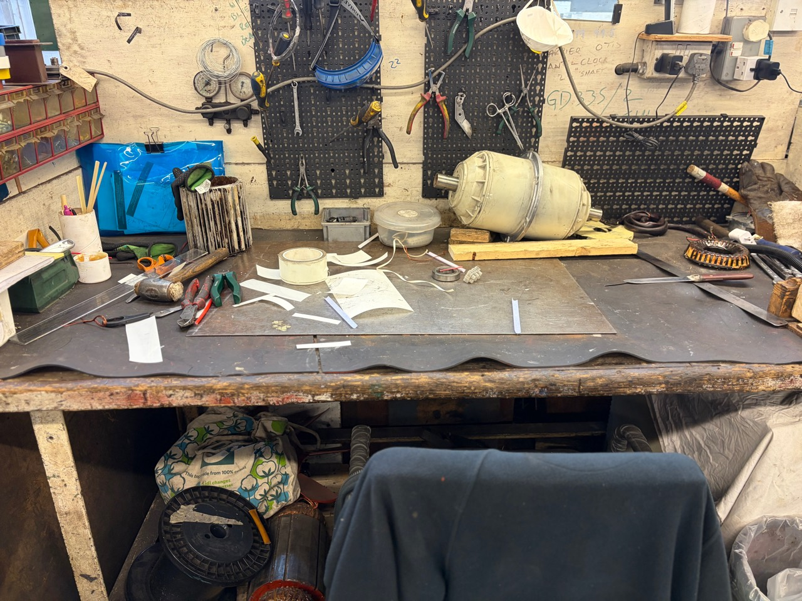

Established in Croydon
GMT Electrical Services has served businesses from Croydon since 1985.

Precision engineering for motors, pumps, fans, kitchen extractors and gearboxes. GMT Electrical Services works from its Croydon workshop and supports businesses across London and the South East.
Why choose GMT?
Practical engineering advice for the equipment your business depends on.
GMT Electrical Services has served businesses from Croydon since 1985.
GMT provides repair, supply and installation support for motors, pumps, fans, extractors and gearboxes.
Provide the equipment details and fault symptoms. GMT’s workshop team will assess the enquiry, advise on a suitable route and confirm the next step.
Send your enquiry to GMT’s workshop team for clear guidance on scope and next steps.
More engineering support
Find service information and see what details to include in an enquiry.
Page 1 of 3
Customer reviews
Selected reviews from GMT's Google Business Profile.
Explore GMT's motor, pump, fan, extractor and gearbox services. Each service has a dedicated page and a direct route to the workshop.

For equipment brought to GMT's Croydon workshop, provide the motor details and fault symptoms. The team will assess the enquiry, advise on a suitable rewind or repair route and confirm the next step.
Get workshop advice on rewind suitability and next steps.
Make an enquiry
Repair, rewind, testing and replacement enquiries for single-phase and three-phase motors.
Get workshop advice on repair and replacement routes.
Make an enquiry
Repair and installation enquiries for commercial fans, toilet extractors, boiler fans and kitchen extractor systems.
Find a repair route for ventilation equipment at your premises.
Make an enquiry
Repair, supply and installation enquiries for sump, pool, multi-stage and other pump equipment.
Get advice on the right repair, supply or installation route.
Make an enquiry
Repair, supply and fitting enquiries for kitchen extractor fans and related commercial equipment.
Get workshop advice on extractor repair and supply enquiries.
Make an enquiry
Inspection, repair and supply enquiries for mechanical gearboxes used with electric motor equipment.
Get workshop advice on gearbox repair or supply.
Make an enquiry
Enquire about inspection and testing as part of a motor repair request.
Clarify the fault before deciding on a repair route.
Make an enquiry
Workshop and site support enquiries for motor, pump, fan and gearbox equipment.
Get advice on workshop or on-site support.
Make an enquiryProvide the equipment details, fault symptoms and location. GMT’s workshop team will assess the breakdown enquiry, advise on the appropriate route and confirm scope and response availability.
Get direct workshop advice on equipment breakdowns.
Make an enquiryOur story
GMT Electrical Services was started in 1985 by three partners who had worked for an experienced company in the electrical engineering industry. From its Croydon base, the company has continued to adapt while building experience across motor rewinds, motor repairs, pumps, fans, kitchen extractors and gearboxes.
Today, GMT supports businesses with workshop and site repair, supply and installation enquiries. The team reviews the equipment and fault, advises on a suitable route and confirms the next steps.
See how to prepare a repair enquiryGMT Electrical Services · Croydon
A motor repair enquiry starts with the equipment identity and a clear description of the fault. GMT Electrical Services will review those details, advise on a suitable repair route and confirm the next step.
Send the make, model and nameplate information where available. Explain what the motor drives and whether it is available at your site or the workshop.
Include when the issue began and what changed. Photos can help identify the unit, but do not dismantle equipment solely to take a photo.
GMT will assess the motor details and fault symptoms, then advise whether repair, rewind, testing or replacement is appropriate. Confirm scope, availability and any quotation with the workshop before work proceeds.
At the workshop
Photographs from GMT’s Croydon workshop. The team reviews repair enquiries and advises on a suitable next step.
GMT Electrical Services · Croydon
Provide the equipment details and fault symptoms. GMT’s workshop team will assess your enquiry and advise on the next step.